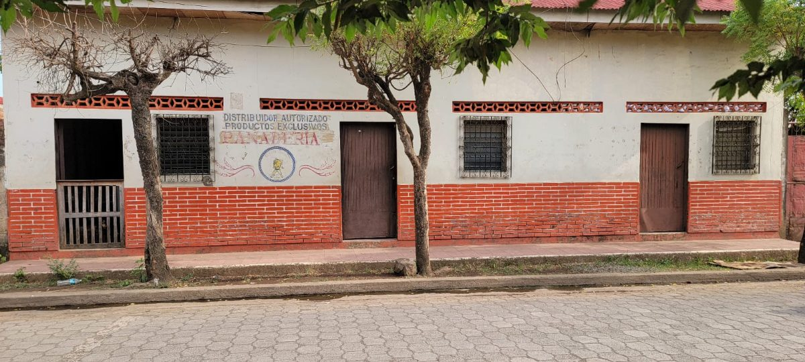
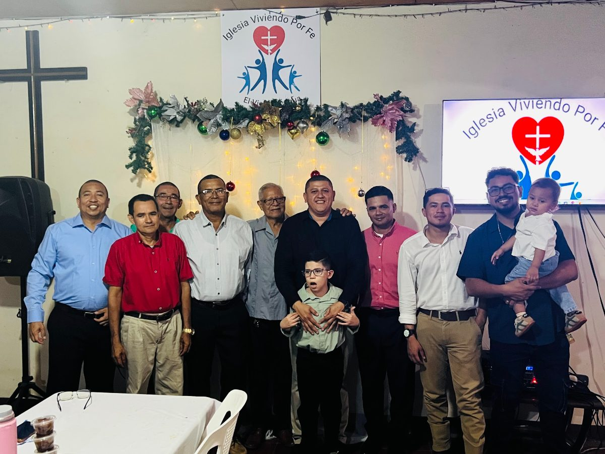
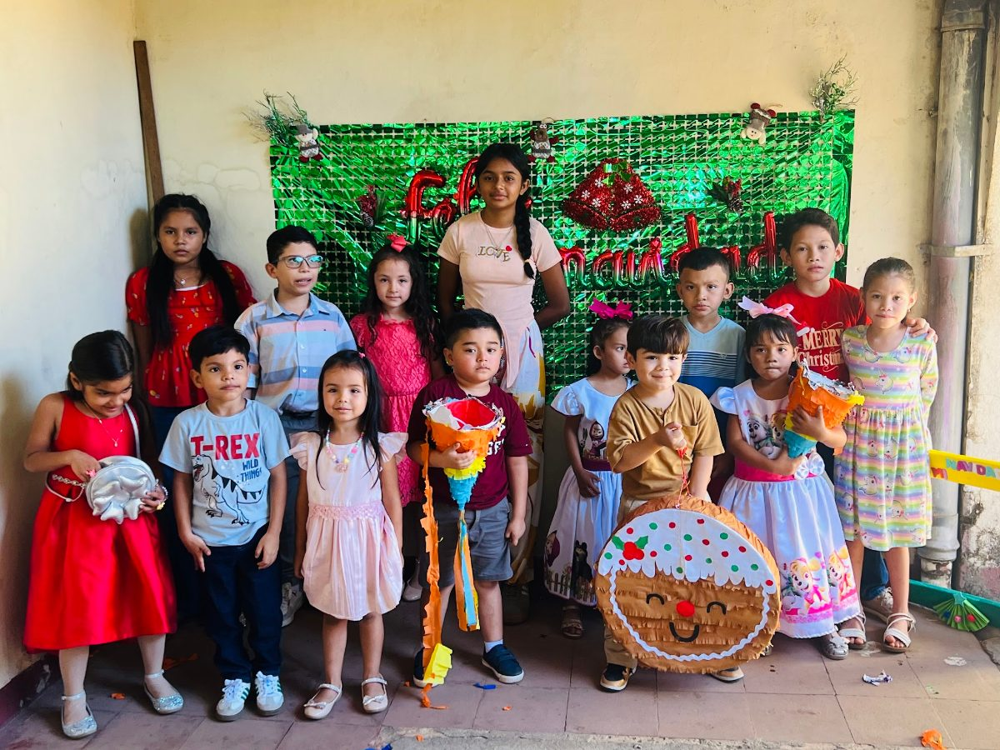

Domingo
Culto de adoración
10:00 am
Alabanza, oración y predicación de la Palabra para toda la familia.
Somos una comunidad de creyentes centrada en Cristo en El Viejo, Chinandega. Creemos que la Palabra de Dios transforma vidas, y queremos que nos acompañes a adorar, aprender y crecer juntos.
Alabanza, oración y predicación de la Palabra para toda la familia.
Reuniones separadas de hombres y de mujeres.
Estudio bíblico para crecer como discípulos de Cristo.
Predicar fielmente la Palabra de Dios, creyendo que ella es suficiente y poderosa para transformar vidas, edificar a la iglesia y conformar a cada creyente a la imagen de Jesucristo.
Ser una comunidad de creyentes centrada en Cristo y comprometida con la Gran Comisión, donde cada miembro viva en todo tiempo por fe, dependa de Dios en todo momento y conozca su soberanía.
Creemos que la Biblia es la Palabra de Dios, inspirada, infalible y la máxima autoridad para juzgar las doctrinas y conductas de los seres humanos.
Creemos en un solo Dios que existe eternamente en tres personas: el Padre, el Hijo y el Espíritu Santo.
Creemos que Jesucristo es el Hijo de Dios, plenamente Dios y plenamente hombre, quien nació de una virgen, vivió una vida sin pecado, murió, resucitó al tercer día y ascendió a los cielos.
Creemos que todos los seres humanos heredaron el pecado original.
Creemos que la salvación es por gracia solamente, mediante la fe en Cristo, y no por obras humanas.
Creemos que la iglesia es el cuerpo de Cristo, y que tiene una misión: predicar el evangelio, hacer discípulos, y practicar fielmente las ordenanzas del bautismo y la cena del Señor.
Creemos firmemente que Cristo volverá, creemos en la resurrección, que Dios levantará a sus hijos de la muerte para darles vida eterna.
Escuchamos juntos, estudiamos juntos y se predica la verdad.

Nuestro templo en El Viejo, abierto para todos.

Hombres comprometidos con el crecimiento espiritual del cuerpo de Cristo.

Mujeres que se reúnen para orar y crecer en la Palabra.

Enseñamos a los más pequeños a conocer y amar a Jesús.